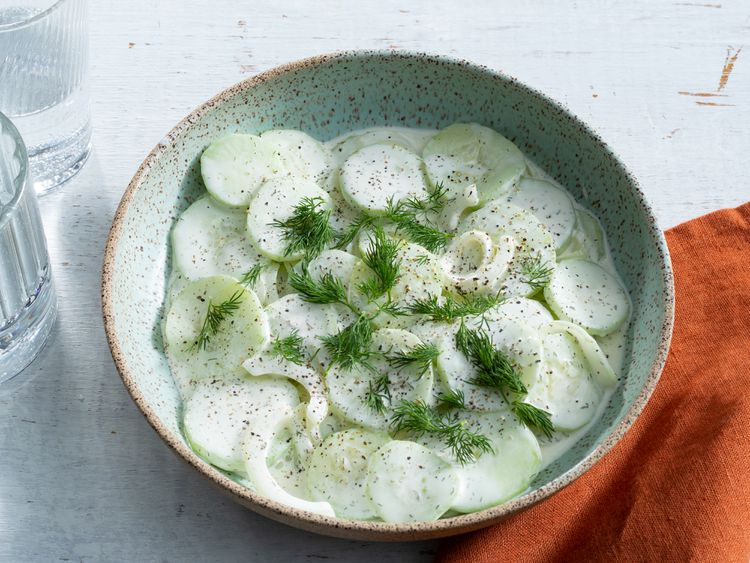

Cucumber Salad
Back to home page

Description
Crisp and creamy cucumber salad makes the perfect summer side. This old-fashioned recipe combines thinly sliced sweet onions, cucumbers, dill, garlic, and mayo for an unbelievably delicious make-ahead dish. Try your hand at this family favorite recipe for the tastiest cucumber salad ever.
Ingredients
- Salad
- 2 cucumbers
- 1 onion
- 1 tablespoon salt
- Dressing
- mayonnaise
- vinegar
- sugar
- dried dill weed
- garlic powder
- ground black pepper
Steps
- Mix Salad ingredients in a bowl, cover with plastic wrap and let sit for 15-30min
- Turn cucumber mixture into a colander set over a bowl or in a sink. Let drain, stirring occasionally, until most of the liquid and salt has drained, 15 to 30 minutes. Transfer drained cucumber mixture to a large bowl.
- Whisk mayonnaise, vinegar, sugar, dill, garlic powder, and pepper for dressing together in a bowl until smooth. Pour over cucumber mixture and stir until coated.
- Pour over cucumber mixture and stir until coated.
- Cover with plastic wrap and refrigerate for 1 to 2 hours before serving.